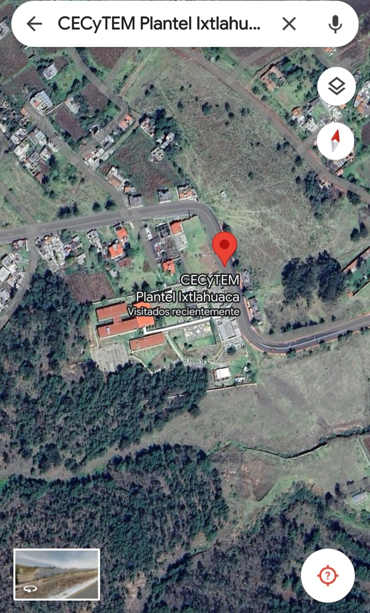

Elaborado por:Jennifer Medina De L a Cruz
Grupo:404. Numero de lista:20
Fecha de Elaboracion:15 de abril del 2024.Hora:12:10 a.m.
Ixtlahuaca
Direccion : camino a Santa Ana S/N Ixtlahuca, Estado de Mexico,C.P.50760
Año de creaccion: 1996
Directora:Biol.Angelica Bernal Jimenez
Contacto :
Telefono:(7122830984)
e-mail:
plantel .ixtlahuaca
Datos :alumnos 1287
Personal docente:49
Personal administrativo:21
Edificios:5
Aulas:23
Laboratorios:2
Areas administrativas:si
Talleres y salas de computo:2
Areas deportivas:4
Equipos con los que se cuentan:171
Bibliotecas:1(6743 volumenes)
Cafeterias
.
|